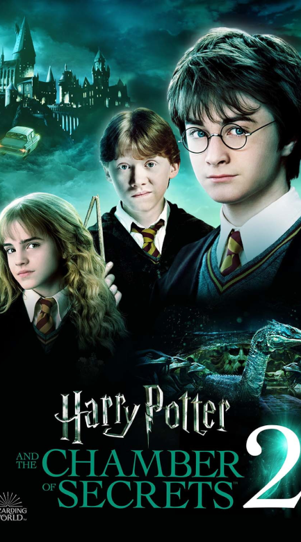

Sinopse
Após as sofríveis férias na casa dos tios, Harry Potter se prepara para voltar a Hogwarts e começar seu
segundo ano na escola de bruxos. Na véspera do início das aulas, a estranha criatura Dobby aparece em seu
quarto e o avisa de que voltar é um erro e que algo muito ruim pode acontecer se Harry insistir em continuar
os estudos de bruxaria. O garoto, no entanto, está disposto a correr o risco e se livrar do lar
problemático.
Resenha Crítica
"Harry Potter e a Câmara Secreta" é o segundo volume de uma série infantojuvenil composta por sete livros
que se tornou a mais vendida da história da literatura. Assinada pela britânica J.K. Rowling, tais obras são
publicadas por aqui pela editora Rocco desde o começo dos anos 2000 – sei que essa apresentação é
desnecessária, mas nunca se sabe se alguém por aí foi vítima do feitiço da memória, né? O primeiro volume,
“Harry Potter e a Pedra Filosofal“, foi lido por mim no comecinho de janeiro e, desde então, não consegui
mais parar de pensar nesse universo mágico e cativante– como demorei tanto para colocar meus pés em
Hogwarts? Portanto, é claro, não hesitei nadinha para pegar as minhas coisas e partir logo para a Plataforma
9 3/4. Afinal, havia um novo ano letivo esperando por mim, mesmo com todos os perigos e mistérios rondando o
castelo.